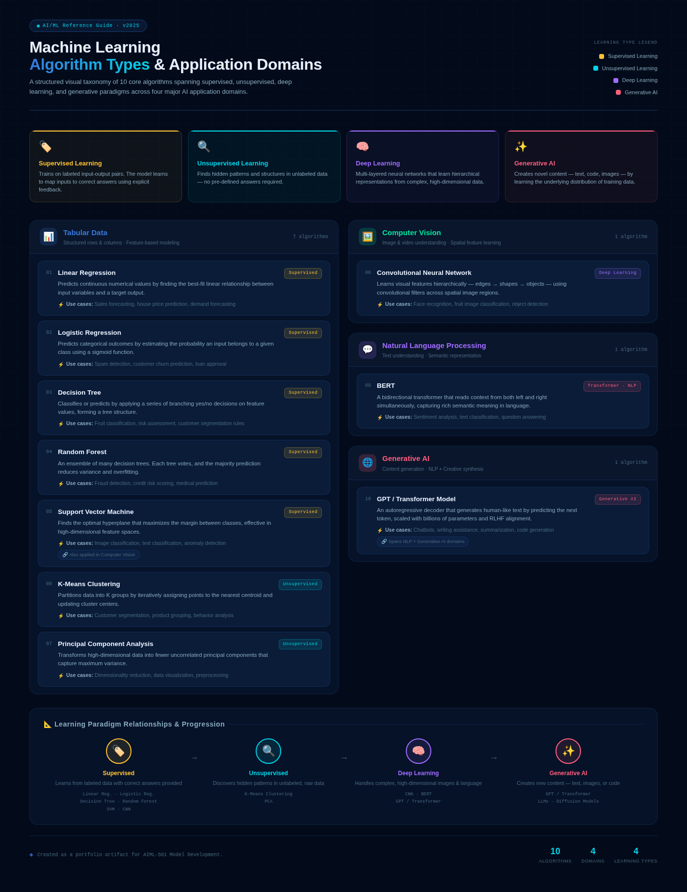

Artifact 6 — Algorithm Types in AI and Machine Learning
Introduction: This artifact presents a visual framework that organizes common machine learning algorithms by learning type, application domain, and real-world use case. It focuses on how different algorithms are used across tabular data, computer vision, natural language processing, and generative AI.
Objective
- Identify and categorize key machine learning algorithms.
- Show the relationship between algorithm type, application domain, and practical use case.
- Create a professional visual reference that supports algorithm selection for real-world AI/ML problems.
- Communicate technical concepts in a simple and organized way for both technical and non-technical audiences.
Artifact Visual Framework
The infographic below classifies ten common algorithms across supervised learning, unsupervised learning, computer vision, natural language processing, and generative AI. It is designed as a quick-reference guide for understanding which algorithms are most useful for different types of data and problem scenarios.

Figure 1. Machine Learning Algorithm Types and Application Domains visual framework.
Algorithm Classification Summary
| Algorithm | Type | Application Domain | Example Use Case |
|---|---|---|---|
| Linear Regression | Supervised Learning | Tabular Data | Predicting sales, housing prices, or demand. |
| Logistic Regression | Supervised Learning | Tabular Data | Spam detection, churn prediction, or loan approval. |
| Decision Tree | Supervised Learning | Tabular Data | Risk assessment, rule-based classification, or fruit classification. |
| Random Forest | Supervised Learning | Tabular Data | Fraud detection, credit scoring, or medical prediction. |
| Support Vector Machine | Supervised Learning | Tabular Data / Computer Vision | Image classification, text classification, or anomaly detection. |
| K-Means Clustering | Unsupervised Learning | Tabular Data | Customer segmentation, product grouping, or behavior analysis. |
| Principal Component Analysis | Unsupervised Learning | Tabular Data | Dimensionality reduction, data visualization, or preprocessing. |
| Convolutional Neural Network | Deep Learning / Supervised Learning | Computer Vision | Image classification, face recognition, or object detection. |
| BERT | Transformer / NLP Model | Natural Language Processing | Sentiment analysis, text classification, or question answering. |
| GPT / Transformer Model | Generative AI / Deep Learning | NLP / Generative AI | Chatbots, summarization, writing assistance, or code generation. |
Description
This artifact organizes algorithm types based on how they learn and where they are commonly applied. Supervised learning algorithms use labeled data to make predictions or classifications. Unsupervised learning algorithms identify hidden patterns without predefined labels. Deep learning models are useful for complex data such as images, language, and large-scale generative tasks. Generative AI models create new outputs such as text, images, or code based on learned patterns.
Process
- Research: Reviewed common AI and machine learning algorithm categories across tabular data, computer vision, NLP, and generative AI.
- Selection: Chose ten algorithms that represent supervised learning, unsupervised learning, deep learning, and generative AI.
- Classification: Sorted each algorithm by type, application domain, real-world use case, and basic working principle.
- Design: Organized the information into a visual framework to make the relationships easier to understand.
- Review: Checked the final artifact for clarity, technical accuracy, readability, and professional presentation.
Tools & Technologies Used
- GitHub Pages for portfolio publishing and documentation.
- HTML and CSS for webpage structure and formatting.
- Canva, PowerPoint, or AI-assisted design tools for infographic creation.
- Generative AI tools for brainstorming, organization, and structure support.
Value Proposition
This artifact demonstrates my ability to simplify complex AI and machine learning concepts into a clear visual resource. It shows that I can organize technical information, compare algorithm types, and communicate model selection concepts in a way that supports practical decision-making.
Unique Value
My unique value is connecting technical AI/ML concepts with business understanding and clear communication. This artifact reflects my ability to translate algorithm concepts into a professional reference that can help learners, stakeholders, and project teams understand which algorithm types fit different data problems.
Relevance
This artifact is relevant for roles in data analytics, machine learning, business intelligence, and AI solution development. In real-world projects, choosing the right algorithm depends on the data type, business goal, available labels, and expected output. This framework helps explain that selection process clearly.
References
- Amazon Web Services. (n.d.). What is machine learning? https://aws.amazon.com/what-is/machine-learning/
- Microsoft. (n.d.). What are machine learning algorithms? https://azure.microsoft.com/en-us/resources/cloud-computing-dictionary/what-are-machine-learning-algorithms/
- Google. (n.d.). Machine Learning Crash Course. https://developers.google.com/machine-learning/crash-course